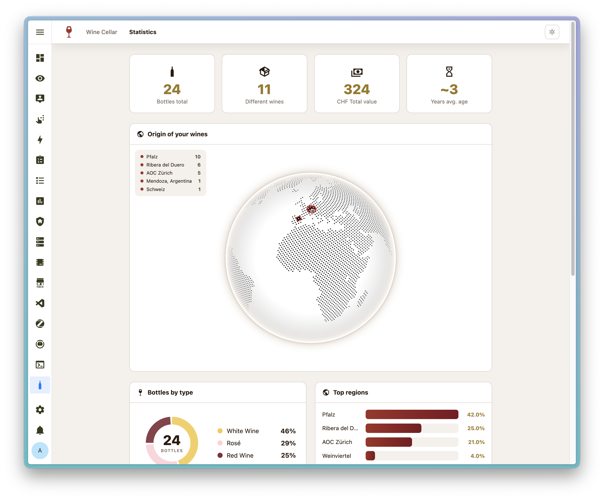

Your personal wine cellar — beautifully organized
Track your collection with AI-powered label recognition, Vivino integration, and a stunning 3D globe. Run as a Home Assistant add-on or standalone Docker container.
Track your collection with AI-powered label recognition, Vivino integration, and a stunning 3D globe. Run as a Home Assistant add-on or standalone Docker container.
A beautiful, responsive interface designed for wine lovers. Works seamlessly on desktop and mobile.



From AI-powered label recognition to interactive globe visualization — Wine Tracker has you covered.
Beautiful cards with photo, vintage, type, region, grape variety, star rating, and personal tasting notes.
Snap a photo of any wine label and let AI fill in all fields automatically. Supports Claude, GPT, OpenRouter, and Ollama.
Search by name, see community ratings, regions, and prices. Import wine data directly into your collection.
See your wine regions on a beautiful 3D WebGL globe. A stunning way to visualize your collection geographically.
Donut charts by type, total bottles, total liters, collection value, and average age — all at a glance.
Ask for food pairings, serving temperature, and recommendations based on your collection and preferences.
Full support for German, English, French, Italian, Spanish, Portuguese, and Dutch.
Run without Home Assistant. Simple Docker Compose setup with persistent data volumes.
Built-in login with admin and readonly roles. Secure your collection with multi-user support.
Rate your wines from 1 to 5 stars. Filter and sort by your personal ratings.
Up and running in under a minute. No Home Assistant required.
docker-compose.yml file with the configuration shown heredocker-compose up -d to start the containerhttp://localhost:5050 in your browser and log inAll data is stored in a Docker volume — your collection survives container updates.
View full configuration on GitHubservices: wine-tracker: image: ghcr.io/xenofex7/wine-tracker:latest ports: - "5050:5050" volumes: - wine-data:/data environment: - AUTH_ENABLED=true - USERS=admin:changeme - SECRET_KEY=change-this-to-a-random-string - CURRENCY=CHF - LANGUAGE=de restart: unless-stopped volumes: wine-data:
Seamless integration with your smart home. Install directly from the add-on store.

https://github.com/xenofex7/ha-wine-tracker